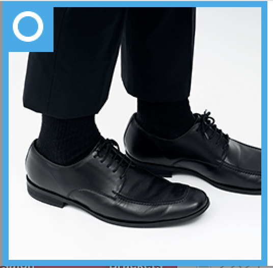
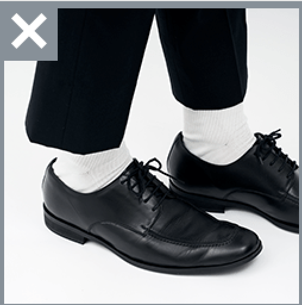
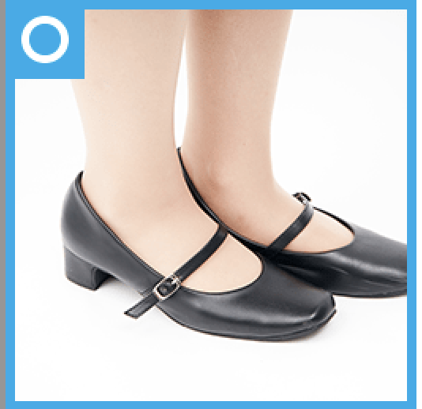
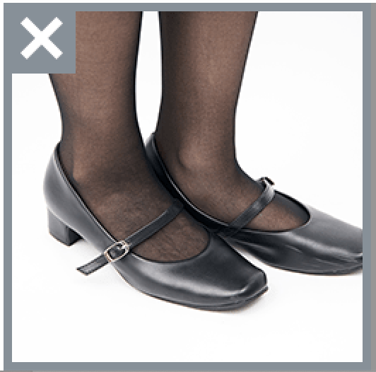

就活における靴下のマナー

男性の正しい靴下マナー
- スーツのズボンと革靴の隙間から靴下が見えないようにする。 見えたとしても色が浮かないように心がける。また、靴はピカピカに磨かれていること。 かかと、ヒールの磨り減りにも注意する。

男性の間違った靴下マナー
- スーツのズボンと革靴の間から靴下が見える。 また、靴下の色がスーツの色味と合っておらず浮いてしまう。 基本的には黒色の靴下が望ましい。

女性の正しいストッキングマナー
- 女性のストッキングはスカートの場合は必ず履く。 色は肌色(自然な)である。ズボンの場合は靴下タイプのストッキンでも良いが、 色はスカートの時と同様に肌色(自然な)であること。 また、パンプスはピカピカに磨かれていること。 かかと、ヒールの磨り減りにも注意する。

女性の間違ったストッキング下マナー
- ストッキングの色が黒などの肌色以外の色は礼儀として正しくない。 基本的には肌色のストッキングを履くこと。 ストッキングを履かないことも礼儀としては正しくないので注意。